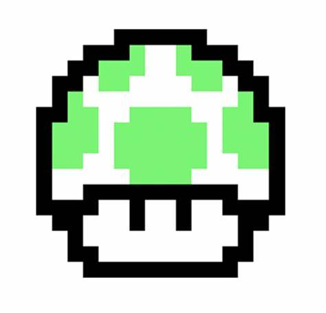
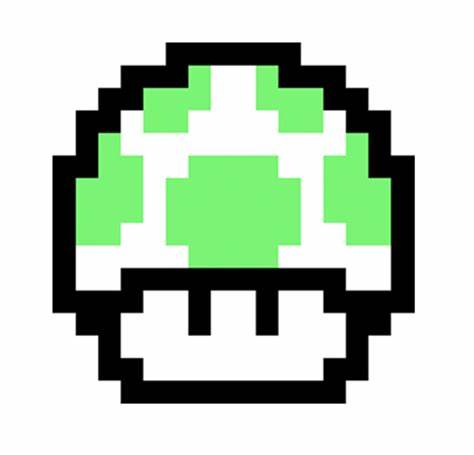

| Tipos de hongos | Rojo | Azul | Verde |
| Imagen |  |
 | |
| Efecto | Crecimiento y alusinaciones | Perder potenciadores y relajacion muscular |
Otra vida y euforia |
Creditos
| Tipos de hongos | Rojo | Azul | Verde |
| Imagen | |
 | |
| Efecto | Crecimiento y alusinaciones | Perder potenciadores y relajacion muscular |
Otra vida y euforia |